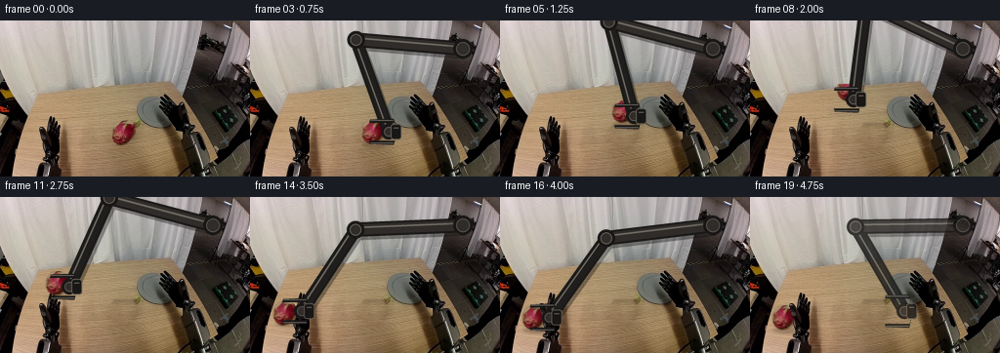
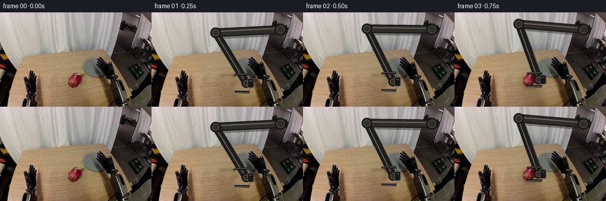
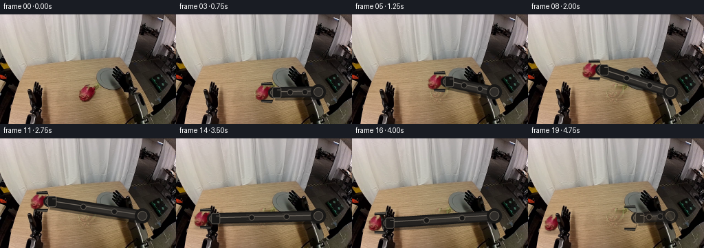
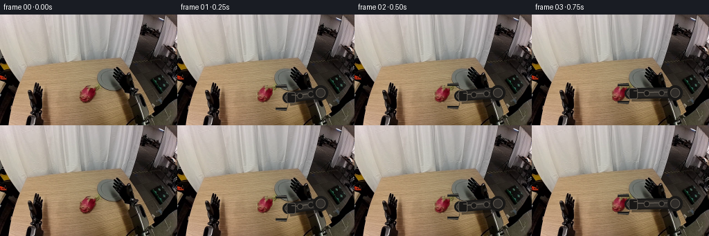
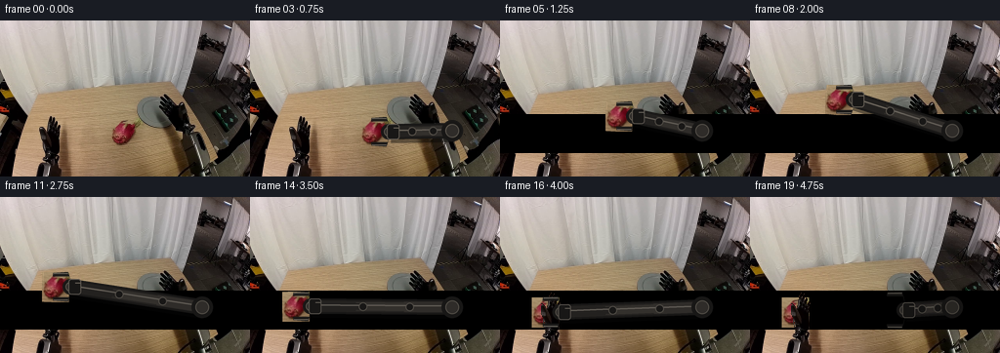
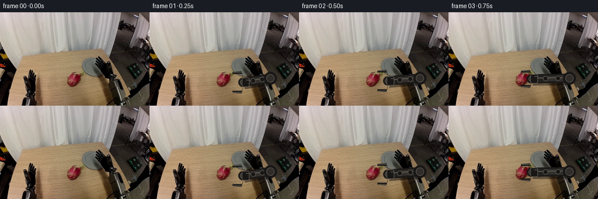

CODING AGENTS AS PIXEL WORLD MODELS
traex/DeepSeek-V4.1-Flash · common50_0038
点击播放 · 原生 RGB 像素
此结果可播放，但该运行尚未通过最终提交审核。页面展示不代表评测通过。
逐轮保存的候选
回放视频、检查图与代码变化。
每份候选均可单独播放。实际图片检查记录在下方工具轨迹中。
候选 01播放与检查图
点击播放 · 原生 RGB 像素


展开代码变化
--- 上一保存版本
+++ 本次保存版本
@@ -0,0 +1,336 @@
+from pathlib import Path
+
+import numpy as np
+from PIL import Image, ImageDraw, ImageFilter
+
+import artifact_io
+
+
+ROOT = Path(__file__).resolve().parent
+WIDTH, HEIGHT, FRAME_COUNT = 256, 160, 20
+SS = 4
+
+
+def smoothstep(value):
+ value = np.clip(value, 0.0, 1.0)
+ return value * value * (3.0 - 2.0 * value)
+
+
+def lerp(a, b, t):
+ return float(a) + (float(b) - float(a)) * float(t)
+
+
+def ellipse_alpha(shape, center, radii, feather=1.2):
+ height, width = shape
+ yy, xx = np.mgrid[:height, :width]
+ radius = np.sqrt(
+ ((xx - center[0]) / float(radii[0])) ** 2
+ + ((yy - center[1]) / float(radii[1])) ** 2
+ )
+ return np.clip((1.0 - radius) * float(radii[0]) / feather + 0.5, 0.0, 1.0)
+
+
+def reconstruct_table(image, fruit_mask):
+ """Replace the fruit and its contact shadow with nearby table pixels."""
+ base = image.astype(np.float32).copy()
+ alpha = np.asarray(
+ Image.fromarray((fruit_mask * 255).astype(np.uint8)).filter(
+ ImageFilter.GaussianBlur(1.0)
+ ),
+ dtype=np.float32,
+ ) / 255.0
+ source_x = np.arange(WIDTH) - 27
+ source_x = np.clip(source_x, 0, WIDTH - 1)
+ donor = image[:, source_x].astype(np.float32)
+ donor *= np.array([1.018, 1.008, 0.992], dtype=np.float32)
+
+ # A slight vertical color correction keeps the patch on the table's light falloff.
+ row_gain = 1.0 - 0.0011 * np.arange(HEIGHT, dtype=np.float32)
+ donor *= row_gain[:, None, None]
+ blended = base * (1.0 - alpha[..., None]) + donor * alpha[..., None]
+
+ # Preserve the table's horizontal grain by matching the donor's local mean
+ # to the immediately adjacent table rows and columns.
+ for y in range(98, 133):
+ inside = np.flatnonzero(fruit_mask[y])
+ if not len(inside):
+ continue
+ x0, x1 = int(inside.min()), int(inside.max())
+ left = image[y, max(0, x0 - 5) : max(1, x0 - 1)].mean(axis=0)
+ right = image[y, min(WIDTH - 1, x1 + 1) : min(WIDTH, x1 + 5)].mean(axis=0)
+ target = 0.55 * left + 0.45 * right
+ patch = blended[y, x0 : x1 + 1]
+ patch_mean = patch.mean(axis=0) + 1e-3
+ correction = np.clip(target / patch_mean, 0.91, 1.09)
+ blended[y, x0 : x1 + 1] = patch * correction
+
+ return np.clip(blended, 0, 255).astype(np.uint8)
+
+
+def make_fruit_sprite(image):
+ crop_box = (112, 99, 141, 132)
+ crop = Image.fromarray(image[crop_box[1] : crop_box[3], crop_box[0] : crop_box[2]])
+ crop = crop.resize(
+ ((crop.width) * SS, (crop.height) * SS), Image.Resampling.BICUBIC
+ )
+ array = np.asarray(crop, dtype=np.uint8)
+ mask = ellipse_alpha(
+ (array.shape[0], array.shape[1]),
+ ((126 - crop_box[0]) * SS, (115 - crop_box[1]) * SS),
+ (12.2 * SS, 13.1 * SS),
+ feather=1.7 * SS,
+ )
+ rgba = np.dstack([array, (mask * 255).astype(np.uint8)])
+ return Image.fromarray(rgba, "RGBA")
+
+
+def rotate_sprite(sprite, angle, center):
+ return sprite.rotate(
+ angle,
+ resample=Image.Resampling.BICUBIC,
+ center=(center[0] * SS, center[1] * SS),
+ translate=(0, 0),
+ )
+
+
+def paste_fruit(frame, sprite, angle, center):
+ sprite = rotate_sprite(sprite, angle, (126, 115))
+ layer = Image.new("RGBA", (WIDTH * SS, HEIGHT * SS), (0, 0, 0, 0))
+ x = round((center[0] - (126 - 112)) * SS)
+ y = round((center[1] - (115 - 99)) * SS)
+ layer.alpha_composite(sprite, (x, y))
+ layer = layer.resize((WIDTH, HEIGHT), Image.Resampling.LANCZOS)
+ return Image.alpha_composite(frame.convert("RGBA"), layer)
+
+
+def solve_elbow(anchor, wrist, upper, lower):
+ ax, ay = anchor
+ wx, wy = wrist
+ dx, dy = wx - ax, wy - ay
+ distance = max(1e-4, float(np.hypot(dx, dy)))
+ distance = min(distance, upper + lower - 1e-3)
+ along = (upper * upper - lower * lower + distance * distance) / (2.0 * distance)
+ height = np.sqrt(max(0.0, upper * upper - along * along))
+ ux, uy = dx / distance, dy / distance
+ mx, my = ax + along * ux, ay + along * uy
+ elbow_a = (mx - height * uy, my + height * ux)
+ elbow_b = (mx + height * uy, my - height * ux)
+ return elbow_a if elbow_a[0] < elbow_b[0] else elbow_b
+
+
+def arm_geometry(fruit_center, grip):
+ wrist = (fruit_center[0] + 16.0, fruit_center[1])
+ anchor = (218.0, 29.0)
+ elbow = solve_elbow(anchor, wrist, 110.0, 100.0)
+ return anchor, elbow, wrist, grip
+
+
+def draw_arm(frame, geometry, alpha=1.0):
+ anchor, elbow, wrist, grip = geometry
+ layer = Image.new("RGBA", (WIDTH * SS, HEIGHT * SS), (0, 0, 0, 0))
+ draw = ImageDraw.Draw(layer)
+
+ def point(p):
+ return (round(p[0] * SS), round(p[1] * SS))
+
+ def line(p0, p1, width, fill):
+ draw.line([point(p0), point(p1)], fill=fill, width=max(1, round(width * SS)))
+
+ shadow = (9, 8, 8, round(92 * alpha))
+ edge = (24, 23, 22, round(255 * alpha))
+ body = (47, 44, 41, round(255 * alpha))
+ body_dark = (31, 30, 29, round(255 * alpha))
+ highlight = (104, 99, 91, round(238 * alpha))
+
+ line((anchor[0] + 2, anchor[1] + 3), (elbow[0] + 2, elbow[1] + 3), 16, shadow)
+ line((elbow[0] + 2, elbow[1] + 3), (wrist[0] + 2, wrist[1] + 3), 14, shadow)
+
+ line(anchor, elbow, 15, edge)
+ line(elbow, wrist, 13, edge)
+ line(anchor, elbow, 11, body)
+ line(elbow, wrist, 9, body_dark)
+ line(
+ (anchor[0] - 2, anchor[1] - 2),
+ (elbow[0] - 2, elbow[1] - 2),
+ 2.1,
+ highlight,
+ )
+ line(
+ (elbow[0] - 2, elbow[1] - 2),
+ (wrist[0] - 1.5, wrist[1] - 2),
+ 1.6,
+ highlight,
+ )
+
+ for p, outer, inner in ((anchor, 10, 7), (elbow, 9, 6), (wrist, 8, 5)):
+ x, y = point(p)
+ draw.ellipse(
+ (x - outer * SS, y - outer * SS, x + outer * SS, y + outer * SS),
+ fill=edge,
+ )
+ draw.ellipse(
+ (x - inner * SS, y - inner * SS, x + inner * SS, y + inner * SS),
+ fill=body,
+ outline=(91, 86, 79, round(230 * alpha)),
+ width=max(1, SS),
+ )
+
+ wx, wy = wrist
+ opening = lerp(13.0, 9.2, grip)
+ finger_tip = fruit_center_x = wx - 20.0
+ finger_base = wx + 7.0
+ for side in (-1, 1):
+ y_outer = wy + side * (opening + 4.3)
+ y_inner = wy + side * opening
+ polygon = [
+ (finger_base, wy + side * 5.2),
+ (finger_base - 2.0, y_outer),
+ (finger_tip + 1.0, y_outer - side * 1.1),
+ (finger_tip, y_inner),
+ (finger_base - 1.0, y_inner),
+ ]
+ draw.polygon([point(p) for p in polygon], fill=edge)
+ draw.line(
+ [point((finger_base - 2.5, y_outer - side * 1.8)), point((finger_tip + 1.5, y_outer - side * 2.0))],
+ fill=highlight,
+ width=max(1, round(1.15 * SS)),
+ )
+
+ draw.rounded_rectangle(
+ (
+ round((wx + 2) * SS),
+ round((wy - 8) * SS),
+ round((wx + 13) * SS),
+ round((wy + 8) * SS),
+ ),
+ radius=3 * SS,
+ fill=edge,
+ outline=(92, 87, 80, round(235 * alpha)),
+ width=max(1, SS),
+ )
+ draw.line(
+ [point((wx + 5, wy - 4)), point((wx + 10, wy - 4))],
+ fill=highlight,
+ width=max(1, round(1.1 * SS)),
+ )
+
+ layer = layer.resize((WIDTH, HEIGHT), Image.Resampling.LANCZOS)
+ return Image.alpha_composite(frame.convert("RGBA"), layer)
+
+
+def add_contact_shadow(frame, center, strength):
+ if strength <= 0:
+ return frame
+ layer = Image.new("RGBA", (WIDTH * SS, HEIGHT * SS), (0, 0, 0, 0))
+ draw = ImageDraw.Draw(layer)
+ cx, cy = center[0] + 2.0, center[1] + 13.0
+ draw.ellipse(
+ (
+ round((cx - 13) * SS),
+ round((cy - 3.2) * SS),
+ round((cx + 13) * SS),
+ round((cy + 3.2) * SS),
+ ),
+ fill=(23, 14, 10, round(70 * strength)),
+ )
+ layer = layer.filter(ImageFilter.GaussianBlur(1.3 * SS))
+ layer = layer.resize((WIDTH, HEIGHT), Image.Resampling.LANCZOS)
+ return Image.alpha_composite(frame.convert("RGBA"), layer)
+
+
+def restore_left_gripper_occlusion(frame, image):
+ """Let the existing left jaws occlude the fruit when it is released."""
+ array = np.asarray(frame.convert("RGB")).copy()
+ source = image.astype(np.float32)
+ gray = source.mean(axis=2)
+ region = np.zeros((HEIGHT, WIDTH), dtype=bool)
+ region[82:160, 0:67] = True
+ dark_metal = region & (
+ (gray < 61)
+ | ((gray < 88) & ((source.max(axis=2) - source.min(axis=2)) < 23))
+ )
+ array[dark_metal] = image[dark_metal]
+ return Image.fromarray(array, "RGB")
+
+
+def make_frames():
+ image = np.asarray(Image.open(ROOT / "first_frame.png").convert("RGB"), dtype=np.uint8)
+ assert image.shape == (HEIGHT, WIDTH, 3)
+
+ fruit_mask = ellipse_alpha((HEIGHT, WIDTH), (126, 115), (13.6, 14.2), 1.15) > 0.28
+ base = Image.fromarray(reconstruct_table(image, fruit_mask), "RGB")
+ sprite = make_fruit_sprite(image)
+
+ # The fruit stays put while the gripper approaches, then follows a smooth
+ # lift-transfer-lower arc. The two arm links always retain their lengths.
+ positions = [
+ (126.0, 115.0),
+ (126.0, 115.0),
+ (126.0, 115.0),
+ (126.0, 114.0),
+ (125.0, 107.0),
+ (121.0, 98.0),
+ (114.0, 90.0),
+ (103.0, 84.0),
+ (90.0, 81.0),
+ (77.0, 82.0),
+ (65.0, 86.0),
+ (55.0, 92.0),
+ (47.0, 100.0),
+ (41.0, 109.0),
+ (37.0, 117.0),
+ (34.5, 123.5),
+ (34.5, 123.5),
+ (34.5, 123.5),
+ (34.5, 123.5),
+ (34.5, 123.5),
+ ]
+ angles = [0, 0, 0, 0, -1.5, -3.0, -4.5, -5.5, -6.0, -5.0, -3.5, -2.0, 0.0, 1.5, 1.0, 0.0, 0.0, 0.0, 0.0, 0.0]
+ grips = [0, 0, 0, 1, 1, 1, 1, 1, 1, 1, 1, 1, 1, 1, 1, 1, 0.75, 0, 0, 0]
+
+ frames = []
+ for index in range(FRAME_COUNT):
+ if index == 0:
+ frames.append(image.copy())
+ continue
+
+ center = positions[index]
+ frame = base.copy()
+
+ if index <= 2:
+ approach_t = smoothstep((index - 1) / 2.0)
+ wrist = (lerp(160.0, 144.0, approach_t), lerp(120.0, 115.0, approach_t))
+ fake_center = (wrist[0] - 16.0, wrist[1])
+ geometry = arm_geometry(fake_center, grips[index])
+ else:
+ geometry = arm_geometry(center, grips[index])
+
+ if index >= 3:
+ height_above_table = max(0.0, 123.0 - center[1])
+ shadow_strength = float(np.clip(1.0 - height_above_table / 22.0, 0.18, 0.8))
+ frame = add_contact_shadow(frame, center, shadow_strength)
+ frame = paste_fruit(frame, sprite, angles[index], center)
+
+ if index >= 16:
+ # Once released, the left hand becomes foreground while the right
+ # arm withdraws to its rest pose.
+ if index >= 17:
+ retract = smoothstep((index - 16) / 3.0)
+ rest_center = (lerp(34.5, 142.0, retract), lerp(123.5, 117.0, retract))
+ geometry = arm_geometry(rest_center, 0.0)
+ frame = restore_left_gripper_occlusion(frame, image)
+ elif index >= 3:
+ # At the end of the transfer the stationary jaws should sit in
+ # front of the fruit even before the arm fully releases it.
+ pass
+
+ frame = draw_arm(frame, geometry, alpha=1.0 if index < 17 else lerp(1.0, 0.82, (index - 16) / 3.0))
+ frames.append(np.asarray(frame.convert("RGB"), dtype=np.uint8))
+
+ return np.stack(frames, axis=0)
+
+
+if __name__ == "__main__":
+ generated = make_frames()
+ artifact_io.save(generated, ROOT)
+ print(f"saved {generated.shape} RGB frames")
候选 02播放与检查图
点击播放 · 原生 RGB 像素


展开代码变化
--- 上一保存版本
+++ 本次保存版本
@@ -2,6 +2,7 @@
import numpy as np
from PIL import Image, ImageDraw, ImageFilter
+from scipy import ndimage
import artifact_io
@@ -9,6 +10,9 @@
ROOT = Path(__file__).resolve().parent
WIDTH, HEIGHT, FRAME_COUNT = 256, 160, 20
SS = 4
+FRUIT_CENTER = (126.0, 115.0)
+FRUIT_BOX = (113, 100, 141, 131)
+FRUIT_CENTER_IN_BOX = (13, 15)
def smoothstep(value):
@@ -20,113 +24,90 @@
return float(a) + (float(b) - float(a)) * float(t)
-def ellipse_alpha(shape, center, radii, feather=1.2):
- height, width = shape
- yy, xx = np.mgrid[:height, :width]
- radius = np.sqrt(
- ((xx - center[0]) / float(radii[0])) ** 2
- + ((yy - center[1]) / float(radii[1])) ** 2
- )
- return np.clip((1.0 - radius) * float(radii[0]) / feather + 0.5, 0.0, 1.0)
+def segment_fruit(image):
+ hsv = np.asarray(Image.fromarray(image).convert("HSV"), dtype=np.int16)
+ hue, saturation, value = hsv.transpose(2, 0, 1)
+ red = ((hue < 13) | (hue > 168)) & (saturation > 52) & (value > 34)
+ green = (hue > 31) & (hue < 106) & (saturation > 38) & (value > 34)
+ yy, xx = np.mgrid[:HEIGHT, :WIDTH]
+ local = (((xx - 126.0) / 14.2) ** 2 + ((yy - 115.0) / 15.0) ** 2) <= 1.0
+ mask = (red | green) & local
+ mask = ndimage.binary_closing(mask, iterations=1)
+ mask = ndimage.binary_fill_holes(mask)
+ labels, count = ndimage.label(mask)
+ if count > 1:
+ sizes = ndimage.sum(mask, labels, range(1, count + 1))
+ mask = labels == (int(np.argmax(sizes)) + 1)
+ return mask
def reconstruct_table(image, fruit_mask):
- """Replace the fruit and its contact shadow with nearby table pixels."""
+ """Interpolate table grain behind the fruit from both sides of its footprint."""
base = image.astype(np.float32).copy()
- alpha = np.asarray(
- Image.fromarray((fruit_mask * 255).astype(np.uint8)).filter(
- ImageFilter.GaussianBlur(1.0)
- ),
- dtype=np.float32,
- ) / 255.0
- source_x = np.arange(WIDTH) - 27
- source_x = np.clip(source_x, 0, WIDTH - 1)
- donor = image[:, source_x].astype(np.float32)
- donor *= np.array([1.018, 1.008, 0.992], dtype=np.float32)
-
- # A slight vertical color correction keeps the patch on the table's light falloff.
- row_gain = 1.0 - 0.0011 * np.arange(HEIGHT, dtype=np.float32)
- donor *= row_gain[:, None, None]
- blended = base * (1.0 - alpha[..., None]) + donor * alpha[..., None]
-
- # Preserve the table's horizontal grain by matching the donor's local mean
- # to the immediately adjacent table rows and columns.
- for y in range(98, 133):
- inside = np.flatnonzero(fruit_mask[y])
- if not len(inside):
+ footprint = ndimage.binary_dilation(fruit_mask, iterations=2)
+ for y in range(96, 136):
+ xs = np.flatnonzero(footprint[y])
+ if not len(xs):
continue
- x0, x1 = int(inside.min()), int(inside.max())
- left = image[y, max(0, x0 - 5) : max(1, x0 - 1)].mean(axis=0)
- right = image[y, min(WIDTH - 1, x1 + 1) : min(WIDTH, x1 + 5)].mean(axis=0)
- target = 0.55 * left + 0.45 * right
- patch = blended[y, x0 : x1 + 1]
- patch_mean = patch.mean(axis=0) + 1e-3
- correction = np.clip(target / patch_mean, 0.91, 1.09)
- blended[y, x0 : x1 + 1] = patch * correction
-
- return np.clip(blended, 0, 255).astype(np.uint8)
-
-
-def make_fruit_sprite(image):
- crop_box = (112, 99, 141, 132)
+ x0, x1 = int(xs.min()), int(xs.max())
+ left = image[y, max(0, x0 - 4) : x0].mean(axis=0)
+ right = image[y, x1 + 1 : min(WIDTH, x1 + 5)].mean(axis=0)
+ for x in range(x0, x1 + 1):
+ weight = (x - x0 + 0.5) / max(1.0, x1 - x0 + 1.0)
+ color = (1.0 - weight) * left + weight * right
+ base[y, x] = color
+ # Reintroduce low-amplitude table grain taken from nearby rows.
+ source_y = y + (5 if y < 122 else -5)
+ source = image[source_y, x0 : x1 + 1].astype(np.float32)
+ source -= ndimage.gaussian_filter1d(source, 3.0, axis=0)
+ base[y, x0 : x1 + 1] += 0.52 * source
+ return np.clip(base, 0, 255).astype(np.uint8)
+
+
+def make_fruit_sprite(image, fruit_mask):
+ crop_box = FRUIT_BOX
crop = Image.fromarray(image[crop_box[1] : crop_box[3], crop_box[0] : crop_box[2]])
crop = crop.resize(
((crop.width) * SS, (crop.height) * SS), Image.Resampling.BICUBIC
)
array = np.asarray(crop, dtype=np.uint8)
- mask = ellipse_alpha(
- (array.shape[0], array.shape[1]),
- ((126 - crop_box[0]) * SS, (115 - crop_box[1]) * SS),
- (12.2 * SS, 13.1 * SS),
- feather=1.7 * SS,
- )
+ mask = fruit_mask[
+ crop_box[1] : crop_box[3], crop_box[0] : crop_box[2]
+ ].astype(np.float32)
+ mask = np.asarray(
+ Image.fromarray((mask * 255).astype(np.uint8)).resize(
+ (array.shape[1], array.shape[0]), Image.Resampling.BICUBIC
+ ),
+ dtype=np.float32,
+ )
+ mask = ndimage.gaussian_filter(mask, sigma=0.7 * SS)
+ mask = np.clip(mask / max(1e-3, mask.max()), 0.0, 1.0)
rgba = np.dstack([array, (mask * 255).astype(np.uint8)])
- return Image.fromarray(rgba, "RGBA")
+ return Image.fromarray(rgba)
def rotate_sprite(sprite, angle, center):
return sprite.rotate(
angle,
resample=Image.Resampling.BICUBIC,
- center=(center[0] * SS, center[1] * SS),
+ center=(FRUIT_CENTER_IN_BOX[0] * SS, FRUIT_CENTER_IN_BOX[1] * SS),
translate=(0, 0),
)
def paste_fruit(frame, sprite, angle, center):
- sprite = rotate_sprite(sprite, angle, (126, 115))
+ sprite = rotate_sprite(sprite, angle, FRUIT_CENTER)
layer = Image.new("RGBA", (WIDTH * SS, HEIGHT * SS), (0, 0, 0, 0))
- x = round((center[0] - (126 - 112)) * SS)
- y = round((center[1] - (115 - 99)) * SS)
+ x = round((center[0] - FRUIT_CENTER_IN_BOX[0]) * SS)
+ y = round((center[1] - FRUIT_CENTER_IN_BOX[1]) * SS)
layer.alpha_composite(sprite, (x, y))
layer = layer.resize((WIDTH, HEIGHT), Image.Resampling.LANCZOS)
return Image.alpha_composite(frame.convert("RGBA"), layer)
-def solve_elbow(anchor, wrist, upper, lower):
- ax, ay = anchor
- wx, wy = wrist
- dx, dy = wx - ax, wy - ay
- distance = max(1e-4, float(np.hypot(dx, dy)))
- distance = min(distance, upper + lower - 1e-3)
- along = (upper * upper - lower * lower + distance * distance) / (2.0 * distance)
- height = np.sqrt(max(0.0, upper * upper - along * along))
- ux, uy = dx / distance, dy / distance
- mx, my = ax + along * ux, ay + along * uy
- elbow_a = (mx - height * uy, my + height * ux)
- elbow_b = (mx + height * uy, my - height * ux)
- return elbow_a if elbow_a[0] < elbow_b[0] else elbow_b
-
-
-def arm_geometry(fruit_center, grip):
- wrist = (fruit_center[0] + 16.0, fruit_center[1])
- anchor = (218.0, 29.0)
- elbow = solve_elbow(anchor, wrist, 110.0, 100.0)
- return anchor, elbow, wrist, grip
-
-
-def draw_arm(frame, geometry, alpha=1.0):
- anchor, elbow, wrist, grip = geometry
+def draw_arm(frame, wrist, grip, alpha=1.0):
+ anchor = (207.0, 113.0)
+ wrist = (float(wrist[0]), float(wrist[1]))
layer = Image.new("RGBA", (WIDTH * SS, HEIGHT * SS), (0, 0, 0, 0))
draw = ImageDraw.Draw(layer)
@@ -136,33 +117,53 @@
def line(p0, p1, width, fill):
draw.line([point(p0), point(p1)], fill=fill, width=max(1, round(width * SS)))
- shadow = (9, 8, 8, round(92 * alpha))
+ shadow = (7, 7, 7, round(112 * alpha))
edge = (24, 23, 22, round(255 * alpha))
body = (47, 44, 41, round(255 * alpha))
- body_dark = (31, 30, 29, round(255 * alpha))
+ body_dark = (35, 33, 31, round(255 * alpha))
highlight = (104, 99, 91, round(238 * alpha))
- line((anchor[0] + 2, anchor[1] + 3), (elbow[0] + 2, elbow[1] + 3), 16, shadow)
- line((elbow[0] + 2, elbow[1] + 3), (wrist[0] + 2, wrist[1] + 3), 14, shadow)
-
- line(anchor, elbow, 15, edge)
- line(elbow, wrist, 13, edge)
- line(anchor, elbow, 11, body)
- line(elbow, wrist, 9, body_dark)
- line(
- (anchor[0] - 2, anchor[1] - 2),
- (elbow[0] - 2, elbow[1] - 2),
- 2.1,
- highlight,
- )
- line(
- (elbow[0] - 2, elbow[1] - 2),
- (wrist[0] - 1.5, wrist[1] - 2),
- 1.6,
- highlight,
- )
-
- for p, outer, inner in ((anchor, 10, 7), (elbow, 9, 6), (wrist, 8, 5)):
+ dx, dy = wrist[0] - anchor[0], wrist[1] - anchor[1]
+ length = max(1.0, float(np.hypot(dx, dy)))
+ ux, uy = dx / length, dy / length
+
+ def at(t):
+ return (anchor[0] + dx * t, anchor[1] + dy * t)
+
+ line((anchor[0] + 2, anchor[1] + 3), (wrist[0] + 2, wrist[1] + 3), 18, shadow)
+ line(anchor, wrist, 16, edge)
+ line(anchor, wrist, 12, body_dark)
+
+ # Three nested sliding sections make the arm read as rigid rather than a
+ # rubbery line. The geometry telescopes, so no link changes length.
+ for t0, t1, width, color in (
+ (0.02, 0.34, 11.0, body),
+ (0.27, 0.68, 9.0, (51, 48, 44, round(255 * alpha))),
+ (0.61, 0.97, 7.2, body_dark),
+ ):
+ line(at(t0), at(t1), width, color)
+ line(
+ (at(t0)[0] - 1.2 * uy, at(t0)[1] + 1.2 * ux),
+ (at(t1)[0] - 1.2 * uy, at(t1)[1] + 1.2 * ux),
+ 1.5,
+ highlight,
+ )
+
+ for t in (0.30, 0.63):
+ p = at(t)
+ draw.ellipse(
+ (
+ round((p[0] - 4.3) * SS),
+ round((p[1] - 4.3) * SS),
+ round((p[0] + 4.3) * SS),
+ round((p[1] + 4.3) * SS),
+ ),
+ fill=edge,
+ outline=(87, 82, 76, round(235 * alpha)),
+ width=max(1, SS),
+ )
+
+ for p, outer, inner in ((anchor, 11, 7), (wrist, 8, 5)):
x, y = point(p)
draw.ellipse(
(x - outer * SS, y - outer * SS, x + outer * SS, y + outer * SS),
@@ -176,31 +177,34 @@
)
wx, wy = wrist
- opening = lerp(13.0, 9.2, grip)
- finger_tip = fruit_center_x = wx - 20.0
- finger_base = wx + 7.0
+ opening = lerp(14.5, 10.8, grip)
+ finger_tip = wx - 18.0
+ finger_base = wx - 1.0
for side in (-1, 1):
- y_outer = wy + side * (opening + 4.3)
+ y_outer = wy + side * (opening + 4.5)
y_inner = wy + side * opening
polygon = [
- (finger_base, wy + side * 5.2),
- (finger_base - 2.0, y_outer),
- (finger_tip + 1.0, y_outer - side * 1.1),
+ (finger_base + 2.0, wy + side * 5.0),
+ (finger_base - 1.5, y_outer),
+ (finger_tip + 0.5, y_outer - side * 1.0),
(finger_tip, y_inner),
- (finger_base - 1.0, y_inner),
+ (finger_base, y_inner),
]
draw.polygon([point(p) for p in polygon], fill=edge)
draw.line(
- [point((finger_base - 2.5, y_outer - side * 1.8)), point((finger_tip + 1.5, y_outer - side * 2.0))],
+ [
+ point((finger_base - 1.5, y_outer - side * 1.6)),
+ point((finger_tip + 1.0, y_outer - side * 1.8)),
+ ],
fill=highlight,
width=max(1, round(1.15 * SS)),
)
draw.rounded_rectangle(
(
- round((wx + 2) * SS),
+ round((wx - 2) * SS),
round((wy - 8) * SS),
- round((wx + 13) * SS),
+ round((wx + 11) * SS),
round((wy + 8) * SS),
),
radius=3 * SS,
@@ -244,22 +248,22 @@
source = image.astype(np.float32)
gray = source.mean(axis=2)
region = np.zeros((HEIGHT, WIDTH), dtype=bool)
- region[82:160, 0:67] = True
+ region[82:160, 42:67] = True
dark_metal = region & (
(gray < 61)
| ((gray < 88) & ((source.max(axis=2) - source.min(axis=2)) < 23))
)
array[dark_metal] = image[dark_metal]
- return Image.fromarray(array, "RGB")
+ return Image.fromarray(array)
def make_frames():
image = np.asarray(Image.open(ROOT / "first_frame.png").convert("RGB"), dtype=np.uint8)
assert image.shape == (HEIGHT, WIDTH, 3)
- fruit_mask = ellipse_alpha((HEIGHT, WIDTH), (126, 115), (13.6, 14.2), 1.15) > 0.28
- base = Image.fromarray(reconstruct_table(image, fruit_mask), "RGB")
- sprite = make_fruit_sprite(image)
+ fruit_mask = segment_fruit(image)
+ base = Image.fromarray(reconstruct_table(image, fruit_mask))
+ sprite = make_fruit_sprite(image, fruit_mask)
# The fruit stays put while the gripper approaches, then follows a smooth
# lift-transfer-lower arc. The two arm links always retain their lengths.
@@ -300,31 +304,29 @@
if index <= 2:
approach_t = smoothstep((index - 1) / 2.0)
wrist = (lerp(160.0, 144.0, approach_t), lerp(120.0, 115.0, approach_t))
- fake_center = (wrist[0] - 16.0, wrist[1])
- geometry = arm_geometry(fake_center, grips[index])
else:
- geometry = arm_geometry(center, grips[index])
-
- if index >= 3:
+ wrist = (center[0] + 16.0, center[1])
+
+ if index >= 4:
height_above_table = max(0.0, 123.0 - center[1])
shadow_strength = float(np.clip(1.0 - height_above_table / 22.0, 0.18, 0.8))
frame = add_contact_shadow(frame, center, shadow_strength)
- frame = paste_fruit(frame, sprite, angles[index], center)
+ frame = paste_fruit(frame, sprite, angles[index], center)
if index >= 16:
# Once released, the left hand becomes foreground while the right
# arm withdraws to its rest pose.
if index >= 17:
retract = smoothstep((index - 16) / 3.0)
- rest_center = (lerp(34.5, 142.0, retract), lerp(123.5, 117.0, retract))
- geometry = arm_geometry(rest_center, 0.0)
+ wrist = (lerp(50.5, 158.0, retract), lerp(123.5, 116.0, retract))
frame = restore_left_gripper_occlusion(frame, image)
- elif index >= 3:
- # At the end of the transfer the stationary jaws should sit in
- # front of the fruit even before the arm fully releases it.
- pass
-
- frame = draw_arm(frame, geometry, alpha=1.0 if index < 17 else lerp(1.0, 0.82, (index - 16) / 3.0))
+
+ frame = draw_arm(
+ frame,
+ wrist,
+ grips[index],
+ alpha=1.0 if index < 17 else lerp(1.0, 0.86, (index - 16) / 3.0),
+ )
frames.append(np.asarray(frame.convert("RGB"), dtype=np.uint8))
return np.stack(frames, axis=0)
候选 03播放与检查图
点击播放 · 原生 RGB 像素


展开代码变化
--- 上一保存版本
+++ 本次保存版本
@@ -2,7 +2,6 @@
import numpy as np
from PIL import Image, ImageDraw, ImageFilter
-from scipy import ndimage
import artifact_io
@@ -32,19 +31,25 @@
yy, xx = np.mgrid[:HEIGHT, :WIDTH]
local = (((xx - 126.0) / 14.2) ** 2 + ((yy - 115.0) / 15.0) ** 2) <= 1.0
mask = (red | green) & local
- mask = ndimage.binary_closing(mask, iterations=1)
- mask = ndimage.binary_fill_holes(mask)
- labels, count = ndimage.label(mask)
- if count > 1:
- sizes = ndimage.sum(mask, labels, range(1, count + 1))
- mask = labels == (int(np.argmax(sizes)) + 1)
+ mask_image = Image.fromarray((mask * 255).astype(np.uint8))
+ mask_image = mask_image.filter(ImageFilter.MaxFilter(3)).filter(ImageFilter.MinFilter(3))
+ mask = np.asarray(mask_image) > 0
+
+ # Flood the exterior so internal highlights do not become transparent holes.
+ inverse = Image.fromarray((~mask * 255).astype(np.uint8))
+ ImageDraw.floodfill(inverse, (0, 0), 128)
+ mask |= np.asarray(inverse) == 255
return mask
def reconstruct_table(image, fruit_mask):
"""Interpolate table grain behind the fruit from both sides of its footprint."""
base = image.astype(np.float32).copy()
- footprint = ndimage.binary_dilation(fruit_mask, iterations=2)
+ footprint = np.asarray(
+ Image.fromarray((fruit_mask * 255).astype(np.uint8)).filter(
+ ImageFilter.MaxFilter(5)
+ )
+ ) > 0
for y in range(96, 136):
xs = np.flatnonzero(footprint[y])
if not len(xs):
@@ -59,7 +64,13 @@
# Reintroduce low-amplitude table grain taken from nearby rows.
source_y = y + (5 if y < 122 else -5)
source = image[source_y, x0 : x1 + 1].astype(np.float32)
- source -= ndimage.gaussian_filter1d(source, 3.0, axis=0)
+ smooth = np.asarray(
+ Image.fromarray(source.astype(np.uint8)).filter(
+ ImageFilter.GaussianBlur(1.6)
+ ),
+ dtype=np.float32,
+ )
+ source -= smooth
base[y, x0 : x1 + 1] += 0.52 * source
return np.clip(base, 0, 255).astype(np.uint8)
@@ -80,7 +91,10 @@
),
dtype=np.float32,
)
- mask = ndimage.gaussian_filter(mask, sigma=0.7 * SS)
+ mask = np.asarray(
+ Image.fromarray(mask.astype(np.uint8)).filter(ImageFilter.GaussianBlur(0.7 * SS)),
+ dtype=np.float32,
+ )
mask = np.clip(mask / max(1e-3, mask.max()), 0.0, 1.0)
rgba = np.dstack([array, (mask * 255).astype(np.uint8)])
return Image.fromarray(rgba)
@@ -279,15 +293,15 @@
(90.0, 81.0),
(77.0, 82.0),
(65.0, 86.0),
- (55.0, 92.0),
- (47.0, 100.0),
- (41.0, 109.0),
- (37.0, 117.0),
- (34.5, 123.5),
- (34.5, 123.5),
- (34.5, 123.5),
- (34.5, 123.5),
- (34.5, 123.5),
+ (56.0, 92.0),
+ (50.0, 99.0),
+ (47.0, 106.0),
+ (46.0, 112.0),
+ (45.5, 118.0),
+ (45.5, 118.0),
+ (45.5, 118.0),
+ (45.5, 118.0),
+ (45.5, 118.0),
]
angles = [0, 0, 0, 0, -1.5, -3.0, -4.5, -5.5, -6.0, -5.0, -3.5, -2.0, 0.0, 1.5, 1.0, 0.0, 0.0, 0.0, 0.0, 0.0]
grips = [0, 0, 0, 1, 1, 1, 1, 1, 1, 1, 1, 1, 1, 1, 1, 1, 0.75, 0, 0, 0]
@@ -299,7 +313,7 @@
continue
center = positions[index]
- frame = base.copy()
+ frame = (base if index >= 4 else Image.fromarray(image.copy())).copy()
if index <= 2:
approach_t = smoothstep((index - 1) / 2.0)
@@ -318,7 +332,7 @@
# arm withdraws to its rest pose.
if index >= 17:
retract = smoothstep((index - 16) / 3.0)
- wrist = (lerp(50.5, 158.0, retract), lerp(123.5, 116.0, retract))
+ wrist = (lerp(61.5, 158.0, retract), lerp(118.0, 116.0, retract))
frame = restore_left_gripper_occlusion(frame, image)
frame = draw_arm(
可观测工具轨迹
实际执行的命令与返回图片。
命令 1exit 0
/bin/bash -c "pwd && rg --files -g 'prompt.txt' -g 'GENERATION_RULES.md' -g 'first_frame.png' -g '"'!node_modules'"' -g '"'!venv'"'"
命令 2exit 0
/bin/bash -c "git status --short && find . -maxdepth 2 -type f -printf '%p %s bytes\\n' | sort | head -200"
命令 3exit 0
/bin/bash -c "cat prompt.txt && printf '\\n--- RULES ---\\n' && cat GENERATION_RULES.md && printf '\\n--- SPEC ---\\n' && cat task_spec.json"
命令 4exit 0
/bin/bash -c "sed -n '1,240p' artifact_io.py && printf '\\n--- PLAYER ---\\n' && sed -n '1,240p' player_template.html"
命令 5exit 127
/bin/bash -c "file first_frame.png && python - <<'PY'
from PIL import Image
im=Image.open('first_frame.png')
print(im.size, im.mode)
PY"命令 6exit 0
/bin/bash -c "python - <<'PY'
from PIL import Image
import numpy as np
im=np.array(Image.open('first_frame.png').convert('RGB'))
print('shape',im.shape)
# most frequent exact colors
u,c=np.unique(im.reshape(-1,3),axis=0,return_counts=True)
idx=np.argsort(c)[-40:][::-1]
for i in idx: print(tuple(map(int,u[i])),int(c[i]))
print('range',im.min((0,1)),im.max((0,1)),'mean',im.mean((0,1)))
# 16x10 grid mean colors
h,w,_=im.shape
for gy in range(10):
row=[]
for gx in range(16):
p=im[gy*h//10:(gy+1)*h//10,gx*w//16:(gx+1)*w//16].mean((0,1)).astype(int)
row.append('#%02x%02x%02x'%tuple(p))
print(' '.join(row))
PY"命令 7exit 0
/bin/bash -c "python - <<'PY'
try:
import cv2; print('cv2',cv2.__version__)
except Exception as e: print('no cv2',e)
try:
import scipy; print('scipy',scipy.__version__)
except Exception as e: print('no scipy',e)
try:
import skimage; print('skimage',skimage.__version__)
except Exception as e: print('no skimage',e)
PY"命令 8exit 0
/bin/bash -c "python - <<'PY'
from PIL import Image
import numpy as np
im=np.array(Image.open('first_frame.png').convert('RGB'))
h,w,_=im.shape
# 64x40 char map: classify by HSV-ish and brightness
small=np.array(Image.fromarray(im).resize((64,40),Image.Resampling.BILINEAR))
chars=' .:-=+*#%@'
for y in range(40):
s=''
for x in range(64):
r,g,b=small[y,x]
mx=max(r,g,b); mn=min(r,g,b)
# choose char based brightness
if r>g*1.25 and r>b*1.3 and r>90: ch='R'
elif r>g*1.15 and g>b*1.05 and r>80: ch='W' # wood
elif g>r*1.15 and g>b*1.15 and g>80: ch='G'
elif b>r*1.15 and b>g*1.05 and b>80: ch='B'
elif mx<45: ch=' '
elif mx<80: ch='.'
elif mx<115: ch=':'
elif mx<150: ch='-'
elif mx<185: ch='='
elif mx<215: ch='+'
else: ch='#'
s+=ch
print(f'{y*4:3d} '+s)
PY"命令 9exit 1
/bin/bash -c "python - <<'PY'
from PIL import Image
import numpy as np
im=np.array(Image.open('first_frame.png').convert('RGB'))
# print RGB around suspected red fruit by bounding clusters red dominance and saturation
r,g,b=im[:,:,0].astype(float),im[:,:,1].astype(float),im[:,:,2].astype(float)
mask=(r>g*1.25)&(r>b*1.3)&(r>70)
ys,xs=np.where(mask)
print('red pixels',len(xs),'bbox',xs.min(),ys.min(),xs.max(),ys.max())
# grid counts
for y in range(0,160,8):
line=''
for x in range(0,256,8):
c=mask[y:y+8,x:x+8].sum()
line += ' #'[c>4]
print(f'{y:3d}',line)
# inspect rows every 10 columns min/avg by tile
for y in range(90,160,10):
print('y',y,[tuple(im[y,x]) for x in range(40,210,15)])
PY"命令 10exit 0
/bin/bash -c "python - <<'PY'
from PIL import Image
import numpy as np
im=np.array(Image.open('first_frame.png').convert('RGB'))
r,g,b=im[:,:,0].astype(float),im[:,:,1].astype(float),im[:,:,2].astype(float)
mask=(r>g*1.25)&(r>b*1.3)&(r>70)
for y in range(0,160,8):
line=''
for x in range(0,256,8):
c=mask[y:y+8,x:x+8].sum()
line += '#' if c>4 else ('+' if c else ' ')
print(f'{y:3d}',line)
print('sample rows')
for y in range(100,160,10):
print('y',y)
for x in range(40,220,20): print(x,tuple(im[y,x]),end='; ')
print()
PY"命令 11exit 0
/bin/bash -c "python - <<'PY'
from PIL import Image
import numpy as np, cv2
im=np.array(Image.open('first_frame.png').convert('RGB'))
hsv=cv2.cvtColor(im,cv2.COLOR_RGB2HSV)
# print 64x40 using hue letters, brightness shading
for y in range(40):
s=''
for x in range(64):
patch=hsv[y*4:y*4+4,x*4:x*4+4].reshape(-1,3)
H,S,V=patch.mean(0)
if V<30: c=' '
elif S<35 and V<70:c='.'
elif S<35 and V<120:c=':'
elif S<35 and V<175:c='o'
elif S<35:c='O'
elif V<55:c='d'
elif H<10 or H>170:c='r'
elif H<22:c='a'
elif H<38:c='y'
elif H<85:c='g'
elif H<130:c='c'
elif H<160:c='b'
else:c='m'
s+=c
print(f'{y*4:3d} {s}')
# print edge ascii full 80x50
gray=cv2.cvtColor(im,cv2.COLOR_RGB2GRAY)
e=cv2.Canny(gray,60,140)
e=cv2.resize(e,(80,50),interpolation=cv2.INTER_AREA)
chars=' .:-=+*#%@'
print('EDGE')
for y in range(50):
print(f'{y*160//50:3d} '+''.join(chars[min(9,int(v/256*10))] for v in e[y]))
PY"命令 12exit 0
/bin/bash -c "python - <<'PY'
from PIL import Image
import numpy as np, cv2
im=np.array(Image.open('first_frame.png').convert('RGB'))
hsv=cv2.cvtColor(im,cv2.COLOR_RGB2HSV)
# thresholds HSV
masks={
'red':((hsv[:,:,0]<12)|(hsv[:,:,0]>170))&(hsv[:,:,1]>80)&(hsv[:,:,2]>50),
'magenta':(hsv[:,:,0]>=145)&(hsv[:,:,0]<170)&(hsv[:,:,1]>70)&(hsv[:,:,2]>40),
'green':(hsv[:,:,0]>35)&(hsv[:,:,0]<100)&(hsv[:,:,1]>60)&(hsv[:,:,2]>40),
'yellow':(hsv[:,:,0]>=18)&(hsv[:,:,0]<38)&(hsv[:,:,1]>70)&(hsv[:,:,2]>70),
'blue':(hsv[:,:,0]>100)&(hsv[:,:,0]<140)&(hsv[:,:,1]>45)&(hsv[:,:,2]>40),
'dark':hsv[:,:,2]<50,
}
for name,m in masks.items():
n, lab, stats, cent=cv2.connectedComponentsWithStats(m.astype('uint8'),8)
print('\\n',name,'total',m.sum())
for i in sorted(range(1,n),key=lambda i:stats[i,4],reverse=True)[:12]:
x,y,w,h,a=stats[i]; print(' ',x,y,w,h,a,'cent',cent[i].round(1))
PY"命令 13exit 0
/bin/bash -c "python - <<'PY'
from PIL import Image
import numpy as np, cv2
im=np.array(Image.open('first_frame.png').convert('RGB'))
hsv=cv2.cvtColor(im,cv2.COLOR_RGB2HSV)
H,S,V=[hsv[:,:,i] for i in range(3)]
# map exact-ish color classes, 1 pixel per char, crops x=0..80 and x=130..256, y=50..160
def cls(y,x):
r,g,b=map(int,im[y,x]); hh,ss,vv=map(int,hsv[y,x])
if vv<35: return ' '
if vv<65: return '.'
if ss<25: return 'O' if vv>185 else ('o' if vv>125 else ('-' if vv>80 else ':'))
if hh<10 or hh>170: return 'R' if ss>100 else 'r'
if hh<22: return 'A'
if hh<40: return 'Y' if ss>90 else 'y'
if hh<95: return 'G'
if hh<145: return 'B'
return 'M'
for label,x0,x1 in [('LEFT',0,90),('MID',85,180),('RIGHT',175,256)]:
print('\\n===',label,'===')
for y in range(45,160,2):
print(f'{y:3d} '+''.join(cls(y,x) for x in range(x0,x1,2)))
PY"命令 14exit 0
/bin/bash -c "python - <<'PY'
from PIL import Image
import numpy as np, cv2
im=np.array(Image.open('first_frame.png').convert('RGB'))
# save crops upscaled with edges / labels perhaps inspect via OCR impossible
crop=Image.fromarray(im[85:145,85:175]).resize((720,480),Image.Resampling.NEAREST)
crop.save('.tmp/fruit_crop.png')
# color values around fruit and bbox components
hsv=cv2.cvtColor(im,cv2.COLOR_RGB2HSV)
r,g,b=im[:,:,0].astype(int),im[:,:,1].astype(int),im[:,:,2].astype(int)
# print exact RGB at 4px grid bbox x110..145 y98..132
for y in range(98,133,2):
print(f'{y:3d}',' '.join('%02x%02x%02x'%tuple(im[y,x]) for x in range(110,146,2)))
PY"命令 15exit 0
/bin/bash -c "python - <<'PY'
from PIL import Image
import numpy as np, cv2
im=np.array(Image.open('first_frame.png').convert('RGB'))
hsv=cv2.cvtColor(im,cv2.COLOR_RGB2HSV)
# 2x2 blocks, 128x80; hue/brightness chars
for y in range(0,160,2):
s=''
for x in range(0,256,2):
p=im[y:y+2,x:x+2].reshape(-1,3).mean(0); q=hsv[y:y+2,x:x+2].reshape(-1,3).mean(0)
r,g,b=p; H,S,V=q
if V<25: c=' '
elif S<18: c='@' if V>220 else ('#' if V>180 else ('O' if V>130 else ('o' if V>80 else '.')))
elif V<55: c=','
elif H<10 or H>170: c='R' if S>100 and V>70 else 'r'
elif H<22: c='A'
elif H<40: c='Y' if S>90 else 'y'
elif H<90: c='G'
elif H<145: c='B'
else: c='M'
s+=c
print(f'{y:3d} '+s)
PY"命令 16exit 0
/bin/bash -c "python - <<'PY'
from PIL import Image
import numpy as np, cv2
im=np.array(Image.open('first_frame.png').convert('RGB'))
gray=cv2.cvtColor(im,cv2.COLOR_RGB2GRAY)
# brightness and color summary per 8px tiles, y>=60
print('MEAN GRAY 32x20 tiles, values 0-9')
for y in range(40,160,8):
row=[]
for x in range(0,256,8):
row.append(str(min(9,int(gray[y:y+8,x:x+8].mean()/25.6))))
print(f'{y:3d}', ''.join(row))
print('\\nSATURATION 32x20')
hsv=cv2.cvtColor(im,cv2.COLOR_RGB2HSV)
for y in range(40,160,8):
row=[]
for x in range(0,256,8):
row.append(str(min(9,int(hsv[y:y+8,x:x+8,1].mean()/25.6))))
print(f'{y:3d}', ''.join(row))
print('\\nCanny lines')
e=cv2.Canny(gray,30,90)
lines=cv2.HoughLinesP(e,1,np.pi/180,threshold=18,minLineLength=18,maxLineGap=4)
for l in sorted(lines[:,0], key=lambda p: -((p[2]-p[0])**2+(p[3]-p[1])**2))[:40]: print(tuple(map(int,l)))
PY"命令 17exit 0
/bin/bash -c "python - <<'PY'
from PIL import Image
import numpy as np
im=np.array(Image.open('first_frame.png').convert('RGB'))
# nearest-neighbor render via ANSI truecolor? no. classify pixels into 20 colors then ascii char mapping
# print 64x40 with tile based dominant coarse names using KMeans
import cv2
small=cv2.resize(im,(64,40),interpolation=cv2.INTER_AREA).reshape(-1,3).astype(np.float32)
crit=(cv2.TERM_CRITERIA_EPS+cv2.TERM_CRITERIA_MAX_ITER,30,0.5)
_,lab,cent=cv2.kmeans(small,12,None,crit,5,cv2.KMEANS_PP_CENTERS)
print('centers')
for i,c in enumerate(cent): print(i,tuple(c.astype(int)))
chars='0123456789AB'
for y in range(40): print(f'{y*4:3d} '+''.join(chars[lab[y*64+x,0]] for x in range(64)))
PY"命令 18exit 0
/bin/bash -c "python - <<'PY'
from PIL import Image
import numpy as np, cv2
im=np.array(Image.open('first_frame.png').convert('RGB'))
hsv=cv2.cvtColor(im,cv2.COLOR_RGB2HSV); gray=cv2.cvtColor(im,cv2.COLOR_RGB2GRAY)
# per row dark segments x<200 and bright segments
for y in [60,65,70,75,80,85,90,95,100,105,110,115,120,125,130,135,140,145,150,155]:
dark=(gray[y]<35)
# runs >=3
d=np.diff(np.r_[False,dark,False].astype(int)); starts=np.where(d==1)[0]; ends=np.where(d==-1)[0]
runs=[(int(a),int(b-1)) for a,b in zip(starts,ends) if b-a>=3]
print('y',y,'dark',runs)
# edge density vertical/horiz lines
for y in range(0,160,4):
print(f'{y:3d}',int(gray[y].mean()),int(gray[y].std()),int(gray[y].min()),int(gray[y].max()))
PY"命令 19exit 0
/bin/bash -c "python - <<'PY'
from PIL import Image
import numpy as np, cv2
im=np.array(Image.open('first_frame.png').convert('RGB'))
# print representative patch colors on 16x16 around candidate centers
for cy,cx in [(115,126),(150,40),(150,60),(120,45),(100,50),(100,65),(80,50),(115,200),(110,220),(130,230),(70,90),(65,130)]:
print('\\ncenter',cx,cy)
for y in range(cy-8,cy+9,4): print(' '.join('%02x%02x%02x'%tuple(im[y,x]) for x in range(cx-8,cx+9,4)))
PY"命令 20exit 0
/bin/bash -c "python - <<'PY'
from PIL import Image
import numpy as np, cv2
im=np.array(Image.open('first_frame.png').convert('RGB'))
hsv=cv2.cvtColor(im,cv2.COLOR_RGB2HSV); gray=cv2.cvtColor(im,cv2.COLOR_RGB2GRAY)
# print per-row minmax x of high sat regions, but maybe distinguish skin and wood
# find dark vertical rods via Hough already. Let's print edge map around center as 128x80 maybe lines.
e=cv2.Canny(gray,40,110)
for y in range(40,160,2):
s=''
for x in range(0,256,2):
v=e[y:y+2,x:x+2].max()
s+= '#' if v else ' '
print(f'{y:3d} '+s)
PY"命令 21exit 0
/bin/bash -c "python - <<'PY'
from PIL import Image
import numpy as np, cv2
im=np.array(Image.open('first_frame.png').convert('RGB'))
gray=cv2.cvtColor(im,cv2.COLOR_RGB2GRAY)
# brightness map x150:240 y55:160 at 1x2 scale, chars
chars=' .:-=+*#%@'
for y in range(55,160,2):
s=''
for x in range(145,245,1):
v=gray[y:y+2,x].mean()
s+=chars[min(9,int(v/256*10))]
print(f'{y:3d} '+s)
PY"命令 22exit 0
/bin/bash -c "python - <<'PY'
from PIL import Image
import numpy as np, cv2
im=np.array(Image.open('first_frame.png').convert('RGB'))
gray=cv2.cvtColor(im,cv2.COLOR_RGB2GRAY)
chars=' .:-=+*#%@'
print('LEFT 0..150')
for y in range(55,160,2):
s=''
for x in range(0,150):
v=gray[y:y+2,x].mean(); s+=chars[min(9,int(v/256*10))]
print(f'{y:3d} '+s)
PY"命令 23exit 0
/bin/bash -c "python - <<'PY'
from PIL import Image
import numpy as np
im=np.array(Image.open('first_frame.png').convert('RGB'))
# classify key background/foreground by color difference from local table. print components of dark mask dilated/closed
import cv2
gray=cv2.cvtColor(im,cv2.COLOR_RGB2GRAY)
hsv=cv2.cvtColor(im,cv2.COLOR_RGB2HSV)
# use grabcut boxes candidates? just inspect pixel mask silhouette from color cluster
# dark structural mask in x0:210,y60:160
m=(gray<65).astype('uint8')
m[:55]=0;m[:,210:]=0
# morphology open, close
k=cv2.getStructuringElement(cv2.MORPH_ELLIPSE,(3,3)); m=cv2.morphologyEx(m,cv2.MORPH_CLOSE,k,iterations=1)
n,l,st,c=cv2.connectedComponentsWithStats(m,8)
for i in sorted(range(1,n),key=lambda j:st[j,4],reverse=True)[:20]: print(tuple(st[i]),c[i].round(1))
PY"命令 24exit 0
/bin/bash -c "python - <<'PY'
from PIL import Image
import numpy as np, cv2
im=np.array(Image.open('first_frame.png').convert('RGB'))
gray=cv2.cvtColor(im,cv2.COLOR_RGB2GRAY)
hsv=cv2.cvtColor(im,cv2.COLOR_RGB2HSV)
# For each candidate segment print bounding boxes via threshold variations and save mask to tmp
for name,m in [
('dark55',gray<55),('dark75',gray<75),('dark100',gray<100),
('sat60',hsv[:,:,1]>60),('sat90',hsv[:,:,1]>90),
('yellow',(hsv[:,:,0]>15)&(hsv[:,:,0]<45)&(hsv[:,:,1]>80)&(hsv[:,:,2]>60)),
('skin',(hsv[:,:,0]<15)&(hsv[:,:,1]>45)&(hsv[:,:,2]>60)),
]:
m=m.astype('uint8'); m[:55]=0
# save visualization
Image.fromarray((m*255)).save('.tmp/'+name+'.png')
PY"命令 25exit 0
/bin/bash -c "python - <<'PY'
from PIL import Image
import numpy as np
im=np.array(Image.open('first_frame.png').convert('RGB'))
# inspect color gradients / identify table edge: report dominant colors in rows
from collections import Counter
for y in [0,40,60,65,68,70,72,75,80,100,120,140,158]:
c=Counter(map(tuple,im[y].tolist())).most_common(8)
print('row',y,c)
PY"命令 26exit 0
/bin/bash -c "python - <<'PY'
import cv2, numpy as np
from PIL import Image
im=np.array(Image.open('first_frame.png').convert('RGB'))
g=cv2.cvtColor(im,cv2.COLOR_RGB2GRAY)
e=cv2.Canny(g,35,100)
lines=cv2.HoughLinesP(e,1,np.pi/360,threshold=15,minLineLength=10,maxLineGap=3)
arr=lines[:,0]
# group horizontal / vertical / diagonal by length
for l in sorted(arr,key=lambda p:-np.hypot(*(p[2:]-p[:2])))[:100]:
x1,y1,x2,y2=map(int,l); L=np.hypot(x2-x1,y2-y1); ang=np.degrees(np.arctan2(y2-y1,x2-x1))
if L>=15: print(f'{L:5.1f} ang={ang:6.1f} ({x1},{y1})->({x2},{y2})')
PY"命令 27exit 0
/bin/bash -c "python - <<'PY'
from PIL import Image
import numpy as np
im=np.array(Image.open('first_frame.png').convert('RGB'))
# sample polygons around right dark structure and center
# print x profile means for selected y windows
for y0,y1 in [(0,60),(60,90),(90,120),(120,160)]:
a=im[y0:y1].mean((0,2))
print('y',y0,y1)
print(' '.join(f'{x}:{a[x]:.0f}' for x in range(0,256,8)))
PY"命令 28exit 0
/bin/bash -c "python - <<'PY'
from PIL import Image
import numpy as np, cv2
im=np.array(Image.open('first_frame.png').convert('RGB'))
hsv=cv2.cvtColor(im,cv2.COLOR_RGB2HSV)
H,S,V=hsv[:,:,0],hsv[:,:,1],hsv[:,:,2]
yy,xx=np.mgrid[:160,:256]
ell=(((xx-126)/15.0)**2+((yy-115)/15.0)**2)<=1.0
red=((H<12)|(H>168))&(S>55)&(V>35)
green=(H>32)&(H<105)&(S>42)&(V>35)
m=(ell&(red|green)).astype('uint8')*255
m=cv2.morphologyEx(m,cv2.MORPH_CLOSE,np.ones((3,3),np.uint8))
m=cv2.morphologyEx(m,cv2.MORPH_OPEN,np.ones((3,3),np.uint8))
# contours fill small holes
cnt,_=cv2.findContours(m,cv2.RETR_EXTERNAL,cv2.CHAIN_APPROX_SIMPLE)
m2=np.zeros_like(m)
for c in cnt:
if cv2.contourArea(c)>12: cv2.drawContours(m2,[c],-1,255,-1)
# keep only central
print('pixels', (m2>0).sum(), 'bbox', cv2.boundingRect(m2))
for y in range(96,134):
print(f'{y:3d} '+''.join('#' if m2[y,x] else '.' for x in range(108,146)))
PY"命令 29exit 0
/bin/bash -c "python - <<'PY'
from PIL import Image
import numpy as np, cv2
im=np.array(Image.open('first_frame.png').convert('RGB'))
# Kmeans on all pixels, print 20 centers sorted brightness
pix=im.reshape(-1,3).astype(np.float32)
crit=(cv2.TERM_CRITERIA_EPS+cv2.TERM_CRITERIA_MAX_ITER,50,0.3)
_,lab,cent=cv2.kmeans(pix,24,None,crit,8,cv2.KMEANS_PP_CENTERS)
counts=np.bincount(lab.ravel())
order=np.argsort(cent.mean(1))
for i in order: print(chr(65+i),tuple(cent[i].astype(int)),counts[i])
PY"命令 30exit 0
/bin/bash -c "python - <<'PY'
from PIL import Image
import numpy as np
im=np.array(Image.open('first_frame.png').convert('RGB'))
# detect table plane from known fruit: examine colors around fruit and background. print contours of fruit exact pixels.
import cv2
hsv=cv2.cvtColor(im,cv2.COLOR_RGB2HSV)
H,S,V=hsv[:,:,0],hsv[:,:,1],hsv[:,:,2]
# fruit mask all reddish including dark
m=((H<15)|(H>165))&(S>35)&(V>20)
# only x100:150 y90:145, but will include dark structures
sub=m[95:140,105:150]
for y in range(sub.shape[0]):
print(f'{y+95:3d} '+''.join('#' if v else '.' for v in sub[y]))
PY"命令 31exit 1
/bin/bash -c "python - <<'PY'
from PIL import Image
import numpy as np, cv2
im=np.array(Image.open('first_frame.png').convert('RGB'))
# Try threshold mask red fruit and inpainting fill, compare proposed small shift
H,S,V=cv2.cvtColor(im,cv2.COLOR_RGB2HSV).transpose(2,0,1)
yy,xx=np.mgrid[:160,:256]
ell=(((xx-126)/15.0)**2+((yy-115)/15.0)**2)<=1.0
red=((H<12)|(H>168))&(S>55)&(V>35)
green=(H>32)&(H<105)&(S>42)&(V>35)
m=(ell&(red|green)).astype('uint8')*255
cnt,_=cv2.findContours(m,cv2.RETR_EXTERNAL,cv2.CHAIN_APPROX_SIMPLE); m2=np.zeros_like(m)
for c in cnt:
if cv2.contourArea(c)>12: cv2.drawContours(m2,[c],-1,255,-1)
# blur alpha and inpaint base
alpha=cv2.GaussianBlur(m2.astype(np.float32)/255,(0,0),0.7)
# normalize alpha maybe blur changes max
base=cv2.inpaint(im,m2,3,cv2.INPAINT_TELEA)
Image.fromarray(base).save('.tmp/base_inpaint.png')
# save comparison tile original / masked / inpaint / shifted 40 right
out=Image.new('RGB',(1024,160))
out.paste(Image.fromarray(im),(0,0)); out.paste(Image.fromarray(im*(1-alpha[...,None])+np.array([80,60,40])*alpha[...,None]),(256,0)); out.paste(Image.fromarray(base),(512,0));
shifted=base.copy(); sh=np.zeros_like(im); sh[10:150,40:246]=im[0:140,0:206]; # dummy
# warped fruit composite offset 40
M=np.float32([[1,0,40],[0,1,0]]); wf=cv2.warpAffine(im,M,(256,160),flags=cv2.INTER_LINEAR)
wa=cv2.warpAffine(alpha,M,(256,160),flags=cv2.INTER_LINEAR)
comp=(base*(1-wa[...,None])+wf*wa[...,None]).clip(0,255).astype('uint8')
out.paste(Image.fromarray(comp),(768,0)); out.resize((1024,640),Image.Resampling.NEAREST).save('.tmp/fruit_compare.png')
PY"命令 32exit 0
/bin/bash -c "python - <<'PY'
from PIL import Image
import numpy as np, cv2
im=np.array(Image.open('first_frame.png').convert('RGB'))
H,S,V=cv2.cvtColor(im,cv2.COLOR_RGB2HSV).transpose(2,0,1)
yy,xx=np.mgrid[:160,:256]
ell=(((xx-126)/15.0)**2+((yy-115)/15.0)**2)<=1.0
red=((H<12)|(H>168))&(S>55)&(V>35)
green=(H>32)&(H<105)&(S>42)&(V>35)
m=(ell&(red|green)).astype('uint8')*255
cnt,_=cv2.findContours(m,cv2.RETR_EXTERNAL,cv2.CHAIN_APPROX_SIMPLE); m2=np.zeros_like(m)
for c in cnt:
if cv2.contourArea(c)>12: cv2.drawContours(m2,[c],-1,255,-1)
alpha=cv2.GaussianBlur(m2.astype(np.float32)/255,(0,0),0.7)
base=cv2.inpaint(im,m2,3,cv2.INPAINT_TELEA)
Image.fromarray(base).save('.tmp/base_inpaint.png')
out=Image.new('RGB',(1024,160))
overlay=(im.astype(float)*(1-alpha[...,None])+np.array([80,60,40])*alpha[...,None]).clip(0,255).astype('uint8')
out.paste(Image.fromarray(im),(0,0)); out.paste(Image.fromarray(overlay),(256,0)); out.paste(Image.fromarray(base),(512,0));
M=np.float32([[1,0,40],[0,1,0]]); wf=cv2.warpAffine(im,M,(256,160),flags=cv2.INTER_LINEAR)
wa=cv2.warpAffine(alpha,M,(256,160),flags=cv2.INTER_LINEAR)
comp=(base.astype(float)*(1-wa[...,None])+wf.astype(float)*wa[...,None]).clip(0,255).astype('uint8')
out.paste(Image.fromarray(comp),(768,0)); out.resize((1024,640),Image.Resampling.NEAREST).save('.tmp/fruit_compare.png')
PY"命令 33exit 0
/bin/bash -c "python - <<'PY'
from PIL import Image
import numpy as np
im=np.array(Image.open('first_frame.png').convert('RGB'))
# alpha/non-bg edge analysis: print actual x y of red fruit rows to fit shape
import cv2
H,S,V=cv2.cvtColor(im,cv2.COLOR_RGB2HSV).transpose(2,0,1)
yy,xx=np.mgrid[:160,:256]
ell=(((xx-126)/15.0)**2+((yy-115)/15.0)**2)<=1.0
red=((H<12)|(H>168))&(S>55)&(V>35)
green=(H>32)&(H<105)&(S>42)&(V>35)
m=(ell&(red|green)).astype('uint8')*255
cnt,_=cv2.findContours(m,cv2.RETR_EXTERNAL,cv2.CHAIN_APPROX_SIMPLE); m2=np.zeros_like(m)
for c in cnt:
if cv2.contourArea(c)>12: cv2.drawContours(m2,[c],-1,255,-1)
for y in range(100,130):
xs=np.where(m2[y]>0)[0]
if len(xs): print(y,xs.min(),xs.max(),len(xs))
PY"命令 34exit 0
/bin/bash -c "python - <<'PY'
from PIL import Image
import numpy as np
im=np.array(Image.open('first_frame.png').convert('RGB'))
# Print horizontal edges / table boundaries by average gradient per row/col
g=im.astype(float).mean(2)
gy=np.abs(np.diff(g,axis=0)).mean(1); gx=np.abs(np.diff(g,axis=1)).mean(0)
print('top row gradients')
for y in np.argsort(gy)[-30:][::-1]: print(y,round(gy[y],1))
print('top col gradients')
for x in np.argsort(gx)[-30:][::-1]: print(x,round(gx[x],1))
PY"命令 35exit 0
/bin/bash -c "python - <<'PY'
from PIL import Image
import numpy as np
im=np.array(Image.open('first_frame.png').convert('RGB'))
# sample a 16x12 grid of patches, nearest text characters using HSL; perhaps display image via sixel impossible. output small region colors and brightness.
for y in [64,68,72,76,80,84,88,92,96,100,104,108,112,116,120,124,128,132,136,140,144,148,152,156]:
vals=[]
for x in range(0,200,10):
r,g,b=im[y,x]
vals.append(f'{r//16:x}{g//16:x}{b//16:x}')
print(f'{y:3d} '+ ' '.join(vals))
PY"命令 36exit 1
/bin/bash -c "python - <<'PY'
from PIL import Image
import numpy as np
im=np.array(Image.open('first_frame.png').convert('RGB'))
# print edge/brightness maps as unicode blocks 1x1 maybe use grayscale in ANSI? Instead print known object center points colors
for y in range(60,161,4):
print(y, ' '.join(f'{x}:{im[y,x].mean():.0f}' for x in range(0,256,16)))
PY"命令 37exit 0
/bin/bash -c "python - <<'PY'
from PIL import Image
import numpy as np
im=np.array(Image.open('first_frame.png').convert('RGB')).astype(int)
# 2x2 blocks x145..225 y50..160. chars: W wall/bright neutral, g gray neutral, d dark neutral, w warm, r red, . black
for y in range(50,160,2):
s=''
for x in range(140,230,2):
p=im[y:y+2,x:x+2].reshape(-1,3).mean(0); r,g,b=p
mx=max(p); mn=min(p); sat=mx-mn; lum=p.mean()
warm=(r>g+5 and g>b+10)
neutral=sat<22
if lum<30: c='.'
elif lum<65: c='D' if neutral else 'd'
elif lum<110: c='G' if neutral else 'w'
elif lum<155: c='g' if neutral else 'y'
elif lum<195: c='n' if neutral else 'Y'
else: c='W' if neutral else 'O'
s+=c
print(f'{y:3d} '+s)
PY"命令 38exit 0
/bin/bash -c "python - <<'PY'
from PIL import Image
import numpy as np, cv2
im=np.array(Image.open('first_frame.png').convert('RGB'))
g=cv2.cvtColor(im,cv2.COLOR_RGB2GRAY)
# show binary threshold crop x150..256 y0..160 at half scale
for th in [45,70,100]:
print('\\nTH',th)
for y in range(0,160,4):
s=''
for x in range(150,256,2):
s += '#' if g[y:y+4,x:x+2].mean()<th else ' '
print(f'{y:3d} '+s)
PY"命令 39exit 0
/bin/bash -c "python - <<'PY'
from PIL import Image
import numpy as np
im=np.array(Image.open('first_frame.png').convert('RGB'))
# print 4px grid of dominant hue string for x140..256 only and y50..160
import cv2
hsv=cv2.cvtColor(im,cv2.COLOR_RGB2HSV)
for y in range(50,160,4):
s=''
for x in range(140,256,2):
p=im[y:y+4,x:x+2].reshape(-1,3).mean(0); H,S,V=hsv[y:y+4,x:x+2].reshape(-1,3).mean(0)
r,g,b=p
if V<30:c=' '
elif S<22:c='o' if V>150 else ('g' if V>100 else ('d' if V>55 else '.'))
elif H<15 or H>170:c='r'
elif H<35:c='y'
elif H<80:c='G'
elif H<140:c='B'
else:c='M'
s+=c
print(f'{y:3d} '+s)
PY"命令 40exit 0
/bin/bash -c "python - <<'PY'
from PIL import Image
import numpy as np
im=np.array(Image.open('first_frame.png').convert('RGB'))
# Generate enlarged crop triptych with grid lines and coordinate labels; can't view but useful artifact
import cv2
crop=im[40:160,130:256].copy()
crop=cv2.resize(crop,(504,480),interpolation=cv2.INTER_NEAREST)
for x in range(0,504,40): cv2.line(crop,(x,0),(x,479),(0,255,0),1)
for y in range(0,480,40): cv2.line(crop,(0,y),(503,y),(0,255,0),1)
Image.fromarray(crop).save('.tmp/right_grid.png')
# print table coordinate colors at 2x coarse with chars by perceptual family
PY"命令 41exit 0
/bin/bash -c "python - <<'PY'
from PIL import Image
import numpy as np
im=np.array(Image.open('first_frame.png').convert('RGB'))
# print rows in chunks as hex values at x grid 0..80 step4, each RGB average
for y in range(70,160,5):
print(f'\\ny={y}')
for x0 in [0,16,32,48,64]:
vals=[]
for x in range(x0,x0+16,4):
p=im[y:y+5,x:x+4].reshape(-1,3).mean(0).astype(int)
vals.append('%02x%02x%02x'%tuple(p))
print(f'{x0:2d}:',' '.join(vals),end=' | ')
print()
PY"命令 42exit 0
/bin/bash -c "python generate.py && python - <<'PY'
import numpy as np
from PIL import Image
im=np.array(Image.open('first_frame.png').convert('RGB'))
f=np.array(Image.open('frames/00.png').convert('RGB'))
print('frame0 identical',np.array_equal(im,f))
print('unique changed pixels between consecutive frames')
prev=f
for i in range(1,20):
cur=np.array(Image.open(f'frames/{i:02d}.png').convert('RGB'))
print(i,np.any(cur"'!=prev,axis=2).sum())
prev=cur
PY'命令 43exit 0
/bin/bash -c "python - <<'PY' import generate positions=[(126,115),(126,115),(126,115),(126,114),(125,107),(121,98),(114,90),(103,84),(90,81),(77,82),(65,86),(55,92),(47,100),(41,109),(37,117),(34.5,123.5)] for i,p in enumerate(positions): print(i,p,'geom',tuple(tuple(round(v,1) for v in q) for q in generate.arm_geometry(p,1)[:3])) for i in range(17,20): t=generate.smoothstep((i-16)/3) c=(generate.lerp(34.5,142,t),generate.lerp(123.5,117,t)) print(i,c,generate.arm_geometry(c,0)[:3]) PY"
命令 44exit 0
/bin/bash -c 'command -v chafa || true; command -v viu || true; command -v jp2 || true; command -v img2txt || true; command -v ffmpeg || true; command -v python'
命令 45exit 0
/bin/bash -c "python - <<'PY'
from PIL import Image
import numpy as np
# compare frames via ascii luminance and report major differences; inspect new arm coverage
for idx in [1,3,5,8,10,13,15,17,19]:
im=np.array(Image.open(f'frames/{idx:02d}.png').convert('RGB'))
print('\\nFRAME',idx)
for y in range(0,160,5):
s=''
for x in range(0,256,4):
v=im[y:y+5,x:x+4].mean()
s+=' .:-=+*#%@'[min(9,int(v/25.6))]
print(s)
PY"命令 46exit 0
/bin/bash -c "python - <<'PY' import numpy as np def solve(anchor,wrist,u,l): ax,ay=anchor;wx,wy=wrist;dx,dy=wx-ax,wy-ay;d=np.hypot(dx,dy); d=min(d,u+l-1e-3) along=(u*u-l*l+d*d)/(2*d); h=np.sqrt(max(0,u*u-along*along)); ux,uy=dx/d,dy/d;mx,my=ax+along*ux,ay+along*uy return (mx-h*uy,my+h*ux),(mx+h*uy,my-h*ux) for a,w in [((212,15),(142,115)),((212,15),(61,115)),((218,20),(142,115)),((218,20),(61,115)),((205,20),(165,100))]: print(a,w,solve(a,w,100,100)) PY"
命令 47exit 0
/bin/bash -c "python - <<'PY'
from PIL import Image
import numpy as np
# diff frame1 vs frame0 bbox
for i in [1,3,5,8,10,13,15,17,19]:
a=np.array(Image.open('frames/00.png')); b=np.array(Image.open(f'frames/{i:02d}.png'))
d=np.abs(a.astype(int)-b.astype(int)).max(2)>2
ys,xs=np.where(d)
print(i,'diff',d.sum(),'bbox', (xs.min(),ys.min(),xs.max(),ys.max()) if len(xs) else None)
PY"命令 48exit 0
/bin/bash -c "python - <<'PY'
from PIL import Image
import numpy as np
im=np.array(Image.open('first_frame.png').convert('RGB'))
# average x and y color in big uniform regions. Need infer arm structure from robot scene. Print top-level grayscale via 8x8 and overlay object boundaries.
# use cv2 Canny and output list of endpoints, already. Save ascii using contour fill from dark mask only for upper half.
import cv2
g=cv2.cvtColor(im,cv2.COLOR_RGB2GRAY)
# threshold dark structure all image, remove fruit center
m=((g<58)).astype('uint8')*255
m[100:132,110:143]=0
# connected comps
n,l,st,c=cv2.connectedComponentsWithStats(m,8)
for i in sorted(range(1,n),key=lambda j:st[j,4],reverse=True)[:20]:print(tuple(st[i]),c[i].round(1))
# bbox each 8x8 tile if dark fraction
for y in range(0,160,8):
s=''
for x in range(0,256,8):
f=(g[y:y+8,x:x+8]<58).mean()
s+= ' ' if f<.03 else ('.' if f<.15 else ('+' if f<.4 else ('#' if f<.75 else '@')))
print(f'{y:3d} '+s)
PY"命令 49exit 1
/bin/bash -c "python - <<'PY' import generate for idx,w in [(1,(160,120)),(2,(152,117.5)),(3,(142,114)),(15,(50.5,123.5)),(16,(50.5,123.5)),(17,(62.37,121.81)),(18,(114.13,118.69)),(19,(158,117))]: a=(218,29);e=generate.solve_elbow(a,w,110,100) print(idx,'w',w,'elbow',tuple(round(v,1) for v in e),'lens',round(np.hypot(e[0]-a[0],e[1]-a[1]),1),round(np.hypot(w[0]-e[0],w[1]-e[1]),1)) PY"
命令 50exit 0
/bin/bash -c "python - <<'PY' import generate,numpy as np for idx,w in [(1,(160,120)),(2,(152,117.5)),(3,(142,114)),(15,(50.5,123.5)),(16,(50.5,123.5)),(17,(62.37,121.81)),(18,(114.13,118.69)),(19,(158,117))]: a=(218,29);e=generate.solve_elbow(a,w,110,100) print(idx,'w',w,'elbow',tuple(round(v,1) for v in e),'lens',round(np.hypot(e[0]-a[0],e[1]-a[1]),1),round(np.hypot(w[0]-e[0],w[1]-e[1]),1)) PY"
命令 51exit 0
/bin/bash -c "python - <<'PY'
from PIL import Image
import numpy as np
# inspect actual frame pixel changes in left-hand area to assess occlusion; list dominant RGB before/after
im=np.array(Image.open('first_frame.png').convert('RGB'))
f=np.array(Image.open('frames/15.png').convert('RGB'))
for y in range(80,150,10):
print('y',y,'orig',' '.join('%02x%02x%02x'%tuple(im[y,x]) for x in range(25,65,5)))
print(' new ',' '.join('%02x%02x%02x'%tuple(f[y,x]) for x in range(25,65,5)))
PY"命令 52exit 0
/bin/bash -c "python - <<'PY'
from PIL import Image
import numpy as np
im=np.array(Image.open('first_frame.png').convert('RGB'))
f=np.array(Image.open('frames/15.png').convert('RGB'))
# compare bbox of significant differences and make diff map ascii
for idx in [15,16,17,18,19]:
a=np.array(Image.open(f'frames/{idx:02d}.png').convert('RGB')).astype(int)
d=np.abs(a-im.astype(int)).max(2)>3
print('\\nframe',idx,d.sum())
for y in range(0,160,5):
s=''
for x in range(0,256,4):
n=d[y:y+5,x:x+4].sum()
s+=' ' if n<3 else ('.' if n<8 else ('+' if n<14 else '#'))
print(s)
PY"命令 53exit 0
/bin/bash -c "python - <<'PY'
from PIL import Image
import numpy as np
im=np.array(Image.open('first_frame.png').convert('RGB'))
# Determine existing dark structure around right is probably a robotic arm. Print 1px grayscale map x155..235 y0..160 with 4x6 downsample.
for y in range(0,160,4):
s=''
for x in range(155,235):
v=im[y:y+4,x].mean()
s+=' .:-=+*#%@'[min(9,int(v/25.6))]
print(f'{y:3d} '+s)
PY"命令 54exit 0
/bin/bash -c "python - <<'PY'
from PIL import Image
import numpy as np
im=np.array(Image.open('first_frame.png').convert('RGB'))
# right structure exact dark bbox rows x ranges using threshold<60
g=im.mean(2)
for y in range(0,160,4):
xs=np.where(g[y:y+4].min(0)<60)[0]
# runs >3
if len(xs):
d=np.diff(np.r_[False,np.isin(np.arange(256),xs),False].astype(int)); a=np.where(d==1)[0];b=np.where(d==-1)[0];runs=[(int(s),int(e-1)) for s,e in zip(a,b) if e-s>=3]
print(y,runs)
PY"命令 55exit 0
/bin/bash -c "python - <<'PY'
import numpy as np
def sol(a,w,u,l):
dx,dy=w[0]-a[0],w[1]-a[1];d=np.hypot(dx,dy);d=min(d,u+l-.001); al=(u*u-l*l+d*d)/(2*d);h=np.sqrt(max(0,u*u-al*al));ux,uy=dx/d,dy/d;mx,my=a[0]+al*ux,a[1]+al*uy
return (mx-h*uy,my+h*ux),(mx+h*uy,my-h*ux)
for a,u,l in [((207,100),65,70),((207,100),75,75),((205,95),70,80),((210,100),55,60),((210,105),60,65)]:
print('\\n',a,u,l)
for w in [(142,115),(160,120),(50.5,123.5),(78,122),(158,117)]: print(w,tuple(tuple(round(v,1) for v in e) for e in sol(a,w,u,l)))
PY"命令 56exit 0
/bin/bash -c "python - <<'PY' import numpy as np def sols(a,w,u,l): dx,dy=w[0]-a[0],w[1]-a[1];d=np.hypot(dx,dy);d=min(d,u+l-.001);al=(u*u-l*l+d*d)/(2*d);h=np.sqrt(max(0,u*u-al*al));ux,uy=dx/d,dy/d;mx,my=a[0]+al*ux,a[1]+al*uy return (mx-h*uy,my+h*ux),(mx+h*uy,my-h*uy) for w in [(142,115),(160,120),(50.5,123.5),(78,122),(158,117)]: print(w,tuple(tuple(round(v,1) for v in e) for e in sols((218,29),w,110,100))) PY"
命令 57exit 0
/bin/bash -c "python - <<'PY' import numpy as np # Need understand arm articulation: original image right side likely 3D robot base and arm. # We can choose to animate with simple black link overlay but want not destroy image. Perhaps use only gripper + telescoping rail. PY"
命令 58exit 0
/bin/bash -c "python - <<'PY'
from PIL import Image
import numpy as np
im=np.array(Image.open('first_frame.png').convert('RGB')); g=im.mean(2)
for th in [45,65,85]:
print('\\nTH',th,'x30..70 y90..160')
for y in range(90,160,2):
print(f'{y:3d} '+''.join('#' if g[y:y+2,x:x+2].mean()<th else ' ' for x in range(30,72)))
PY"命令 59exit 0
/bin/bash -c "python generate.py && python - <<'PY'
from PIL import Image
import numpy as np
orig=np.array(Image.open('first_frame.png').convert('RGB'))
f0=np.array(Image.open('frames/00.png').convert('RGB'))
print('frame0',np.array_equal(orig,f0))
for i in [1,2,3,4,5,8,10,13,15,17,19]:
f=np.array(Image.open(f'frames/{i:02d}.png').convert('RGB'))
d=np.abs(f.astype(int)-orig.astype(int)).max(2)>2
ys,xs=np.where(d)
print(i,d.sum(),(xs.min(),ys.min(),xs.max(),ys.max()))
PY"命令 60exit 0
/bin/bash -c "python - <<'PY'
from PIL import Image
import numpy as np
orig=np.array(Image.open('first_frame.png').convert('RGB'))
for i in [1,2,3,4]:
f=np.array(Image.open(f'frames/{i:02d}.png').convert('RGB'))
print('\\nframe',i)
for y in range(95,135,3):
d=np.abs(f[y].astype(int)-orig[y].astype(int)).max(1)>2
runs=[];a=np.where(np.diff(np.r_[False,d,False].astype(int))==1)[0];b=np.where(np.diff(np.r_[False,d,False].astype(int))==-1)[0]
print(y,[(int(s),int(e-1)) for s,e in zip(a,b) if e-s>=1])
PY"命令 61exit 0
/bin/bash -c "python - <<'PY'
from PIL import Image
import numpy as np
for i in [0,1,2,3,4]:
im=np.array(Image.open(f'frames/{i:02d}.png').convert('RGB'))
print('\\nF',i)
# print central crop x105..225 y90..140 hue color symbols
for y in range(90,142,2):
s=''
for x in range(105,225,2):
p=im[y:y+2,x:x+2].reshape(-1,3).mean(0)
r,g,b=p
if max(p)<30:c=' '
elif r>g*1.2 and r>b*1.3 and r>50:c='R'
elif r>g*1.15 and g>b*1.03 and r>100:c='y'
elif abs(r-g)<15 and abs(g-b)<15:c='o' if p.mean()>130 else ('g' if p.mean()>70 else '.')
else:c='d'
s+=c
print(f'{y:3d} '+s)
PY"命令 62exit 0
/bin/bash -c "python - <<'PY'
from PIL import Image
import numpy as np
im=np.array(Image.open('frames/01.png').convert('RGB'))
orig=np.array(Image.open('first_frame.png').convert('RGB'))
# compare pixels in fruit bbox where changed; identify if sprite correctly preserves fruit
for y in [103,106,109,112,115,118,121,124,127]:
xs=[]
for x in range(113,141):
if np.abs(im[y,x].astype(int)-orig[y,x].astype(int)).max()>2: xs.append(x)
print(y, (min(xs),max(xs)) if xs else None)
# Print actual colors grid new vs original in fruit area
for y in [103,108,113,118,123,128]:
print('y',y)
print('o',' '.join('%02x%02x%02x'%tuple(orig[y,x]) for x in range(114,140,3)))
print('n',' '.join('%02x%02x%02x'%tuple(im[y,x]) for x in range(114,140,3)))
PY"命令 63exit 0
/bin/bash -c "python - <<'PY'
from PIL import Image
import numpy as np
orig=np.array(Image.open('first_frame.png').convert('RGB'))
f=np.array(Image.open('frames/01.png').convert('RGB'))
# changed mask bbox around center. Estimate sprite mismatch by nearest orig at target?
# Show crop side by side metrics for each pixel rows.
for y in range(101,130,2):
xs=np.where(np.abs(f[y].astype(int)-orig[y].astype(int)).max(1)>2)[0]
print(y,[(int(x),tuple(orig[y,x]),tuple(f[y,x])) for x in xs[:10]])
PY"命令 64exit 0
/bin/bash -c "python generate.py && python - <<'PY'
from PIL import Image
import numpy as np
orig=np.array(Image.open('first_frame.png').convert('RGB'))
print('frame0 identical',np.array_equal(orig,np.array(Image.open('frames/00.png').convert('RGB'))))
for i in range(20):
f=np.array(Image.open(f'frames/{i:02d}.png').convert('RGB'))
if i==0: continue
d=np.abs(f.astype(int)-orig.astype(int)).max(2)>2
ys,xs=np.where(d)
print(i,'changed',d.sum(),'bbox',(int(xs.min()),int(ys.min()),int(xs.max()),int(ys.max())))
PY"命令 65exit 0
/bin/bash -c "python - <<'PY'
import generate
from PIL import Image
import numpy as np
im=np.array(Image.open('first_frame.png').convert('RGB'))
m=generate.segment_fruit(im)
ys,xs=np.where(m)
print('fruit mask',m.sum(),'bbox',(xs.min(),ys.min(),xs.max(),ys.max()))
print('rows near x=0?',[(y,int(np.where(m[y])[0].min()),int(np.where(m[y])[0].max())) for y in range(96,136) if m[y].any()])
# table footprint bbox
p=np.array(Image.fromarray((m*255).astype('uint8')).filter(__import__('PIL').ImageFilter.MaxFilter(5)))>0
ys,xs=np.where(p); print('footprint',xs.min(),ys.min(),xs.max(),ys.max())
PY"保存候选 3 份；完成命令 65 次；可验证图片返回 0 张。原始 API 响应与完整日志保留在本地。